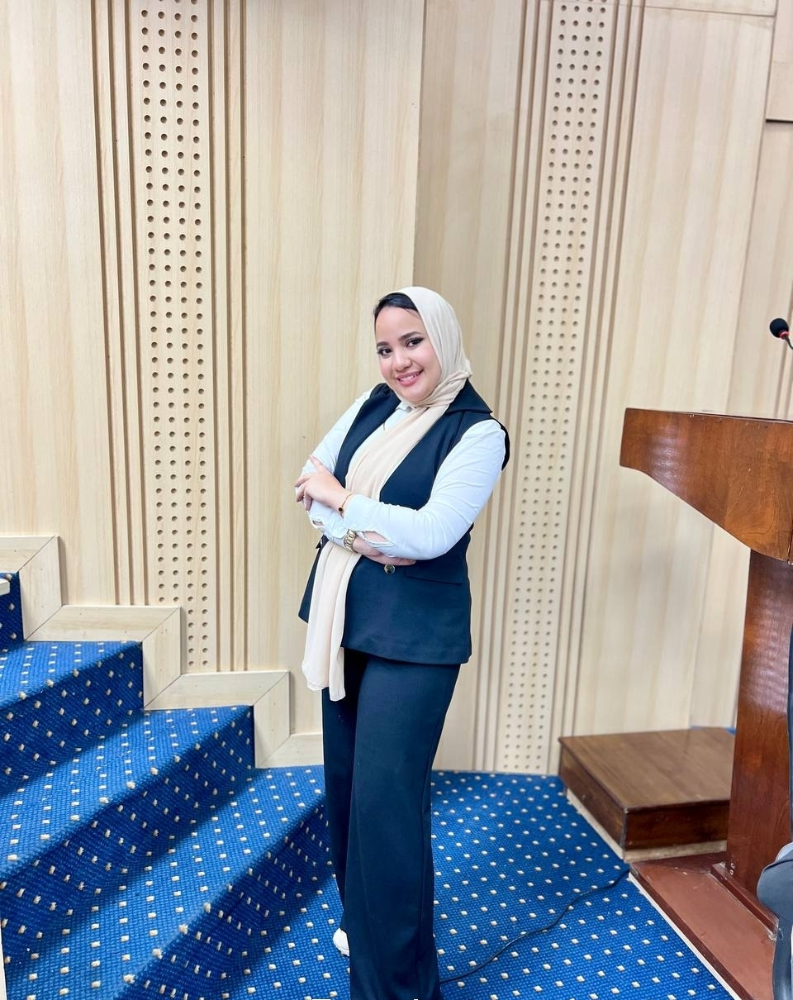

فرست للقيادة العقلية
الطفل اللي بيتعلم يقود نفسه وقراراته، بيكبر وهو قادر يقود أي حاجة تانية في حياته.
تعريف الوحدة
تُعد وحدة القيادة العقلية بأكاديمية فيرست إحدى الوحدات التأهيلية المتخصصة، التي تهدف إلى تنمية القدرات العقلية وتطوير الوظائف التنفيذية، بالتوازي مع بناء وتعزيز المهارات الحياتية لدى الأطفال والمراهقين.
تنطلق الوحدة من رؤية شمولية تستهدف تعزيز قدرة الطفل على إدارة ذاته، وتنظيم تفكيره وسلوكه، والتعامل بفاعلية مع متطلبات الحياة اليومية، بما يدعم قدرته على التعلم والتكيف والاستقلالية.
وتعتمد الوحدة على منهجية تأهيلية فردية تبدأ بالتقييم الدقيق وتحديد الاحتياجات والأولويات، ثم تصميم خطط تدخل تتناسب مع طبيعة كل طفل، مع المتابعة المستمرة وقياس التطور، لضمان انتقال أثر التأهيل إلى مختلف جوانب حياته اليومية.

أ. خلود فرج
⭐ مشرفة وحدة القيادة العقلية – أكاديمية فيرستخريجة كلية الآداب، قسم علم النفس، جامعة الإسكندرية، وحاصلة على دبلومة الأسس العلمية في التربية الخاصة، ودبلومة العلاج النفسي السلوكي، ومنهجية الرعاية الخاصة، بخبرة مهنية تتجاوز العامين في مجال التربية الخاصة والتأهيل.
متخصصة في إعداد وتصميم البرامج التأهيلية الفردية، وتقييم قدرات الأطفال وتحديد أهدافهم، مع خبرة في التعامل مع حالات اضطراب فرط الحركة وتشتت الانتباه (ADHD)، وتنمية الوظائف التنفيذية والمهارات الحياتية.
تتولى الإشراف الفني على وحدة القيادة العقلية، وتطوير منظومة العمل، وتوجيه الفريق الفني ومتابعة جودة الخطط التأهيلية ونتائجها؛ بهدف تعزيز قدرات الأطفال ودعم استقلاليتهم.